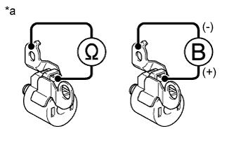
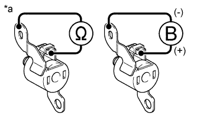

КОРПУС КЛАПАНОВ В СБОРЕ > ПРОВЕРКА |
| 1. ПРОВЕРЬТЕ ЭЛЕКТРОМАГНИТНЫЙ КЛАПАН ПЕРЕКЛЮЧЕНИЯ ПЕРЕДАЧ SL2 |
|  |
Измерьте сопротивление в соответствии со значениями, приведенными в таблице ниже.
| Контакты для подключения диагностического прибора | Режим | Заданные условия |
| Контакт разъема электромагнитного клапана переключения передач S2 - корпус электромагнитного клапана переключения передач S2 | 20°C (68°F) | 11 - 15 Ом |
| *a | Устройство с отсоединенным жгутом проводов (электромагнитный клапан переключения передач S2) |
Подайте в электромагнитный клапан переключения передач напряжение аккумуляторной батареи 12 В и убедитесь в том, что клапан приводится в движение, издавая характерный для этого звук.
| Условия измерений | Заданные условия |
| Клапан приводится в движение, издавая характерный звук. |
| 2. ПРОВЕРЬТЕ ЭЛЕКТРОМАГНИТНЫЙ КЛАПАН ПЕРЕКЛЮЧЕНИЯ ПЕРЕДАЧ SL1 |
|  |
Измерьте сопротивление в соответствии со значениями, приведенными в таблице ниже.
| Контакты для подключения диагностического прибора | Условие | Заданные условия |
| Контакт разъема электромагнитного клапана переключения передач S1 - корпус электромагнитного клапана переключения передач S1 | 20°C (68°F) | 11-15 Ом |
| *a | Устройство с неподсоединенным жгутом проводов (электромагнитный клапан переключения передач S1) |
Подайте в электромагнитный клапан переключения передач напряжение аккумуляторной батареи 12 В и убедитесь в том, что клапан приводится в движение, издавая характерный для этого звук.
| Условия измерений | Заданные условия |
| Клапан приводится в движение, издавая характерный звук. |
| 3. ПРОВЕРЬТЕ ЭЛЕКТРОМАГНИТНЫЕ КЛАПАНЫ ПЕРЕКЛЮЧЕНИЯ ПЕРЕДАЧ SLU и SLT |
 |
Измерьте сопротивление в соответствии со значениями, приведенными в таблице ниже.
| Контакты для подключения диагностического прибора | Условие | Заданные условия |
| 1 - 2 | 20°C (68°F) | 5,0-5,6 Ом |
| *a | Устройство с неподсоединенным жгутом проводов (электромагнитный клапан переключения передач) |
Подайте в электромагнитный клапан переключения передач напряжение аккумуляторной батареи 12 В и убедитесь в том, что клапан приводится в движение, издавая характерный для этого звук.
| Условия измерений | Заданные условия |
| Клапан приводится в движение, издавая характерный звук. |